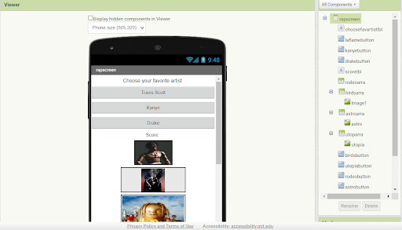
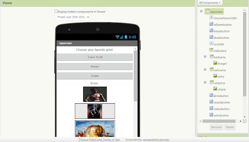
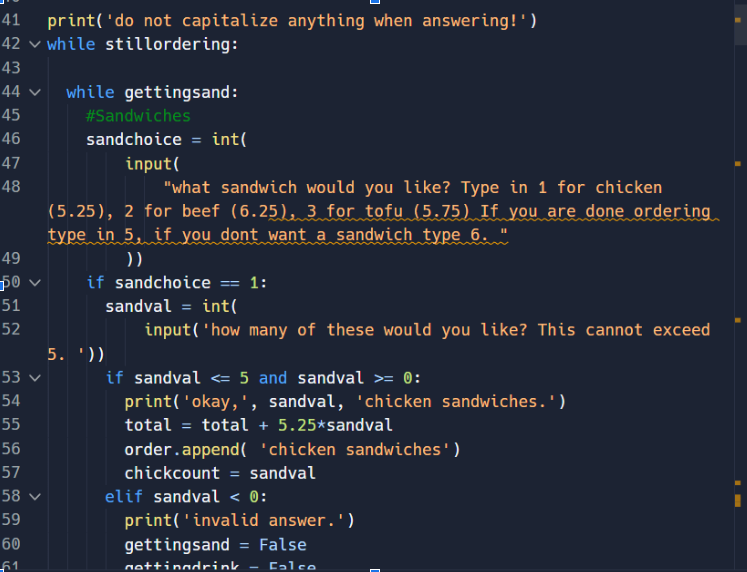
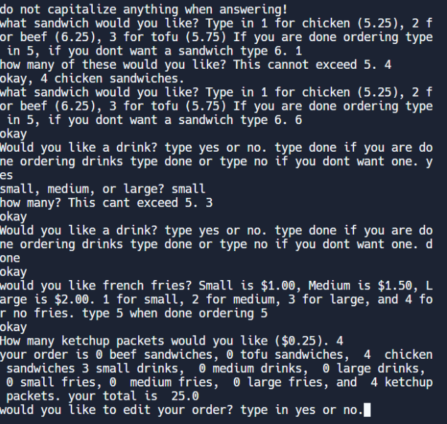

Hello, My name is Tanush Pusuluri. I am 14 and I live in Dublin, California. I have a lot of hobbies, but the main ones are playing the drums, basketball, badminton, and chess. My personal career goals are to become a Senior Web Developer and get a Masters degree in Computer Science. Mostly anything in the computer science field that pays well would be fine with me for my job. My main goal is to get a Masters Degree in a good college, and to make myself and my parents happy. This is mostly my choice for my career because I have always had an interest for coding. My parents also support this idea and can help me on my journey for this. My dream college is UC Berkeley, but I would not mind going to any UC.
My objective is a full time entry-level software engineer job at a good company, like Google for example as a start so its possible to build my career from there. My main goals in this career are to get a job that pays well and also to make my parents happy. Right now, There isn't clear main career goal a freshman in high school like me needs time to brainstorm options.
High School: Emerald High School
As only a freshman, the following is just what is being aiming for by the time graduation time comes.
School diploma is wanted from: Emerald High School
Related classes to do in the future: AP Computer Science Principles, AP Computer Science Applications
Related clubs to do in the future: Emerald UAVs, The Emerald Hack, Emerald Robotics Club (already in some of these)
Drums, Chess, and Basketball are my favorite hobbies. Practicing these is done with my hourly drums class, two 45 minute chess classes, and two 1 hour sessions of basketball weekly. There is also a drum set at home where its possible to practice as well.
Clubs
Sports
Languages
Computer Skills
Coding Skills
.png) 

The 1.1.6 project for my CSE class is one that Demonstrates my skills in this field. In this project, We made a game in MIT app inventor where it Would ask you about your favorite rap artist, And then it would quiz you on your knowledge of Their albums and work. It was essentially a rap discography quiz. It worked well and displayed images of the albums in good quality. If you got it wrong it would say you lose and successfully take you back to the home screen. My job in the project was most of the code, and the part was played well by me as it was functioning well and could be fun for someone like me who likes listening to rap music and wants to try to see whether they know about their favorite artists.
 This project for CSE was one done solo, Only by me. The program would ask the user Whether they want a beef, chicken, or tofu Sandwich and ask how many they want. Then it would ask them for a drink and What size of the drink that they would like, then for fries and what size of the fries they would want. The program would also ask them if they wanted to mega size their fries, and furthermore would give you a discount if you spent a certain amount on your order. It would then givethe total for the order but also ask the user if they would like to make any changes. The program hadloops implemented by me in order to allow the user to order as many of anything they want to. This project was difficult but the end result wasn't bad and overall was a good experience and step to learn from.
Dublin, California
tanushpusuluri@gmail.com